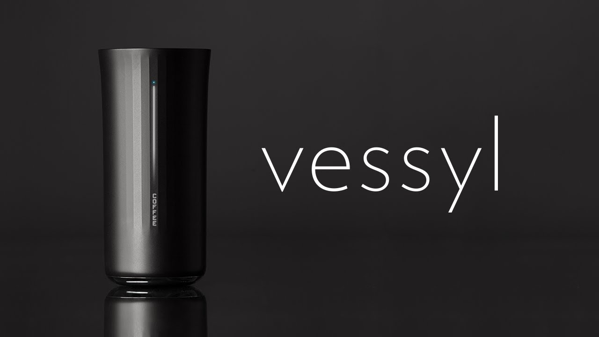
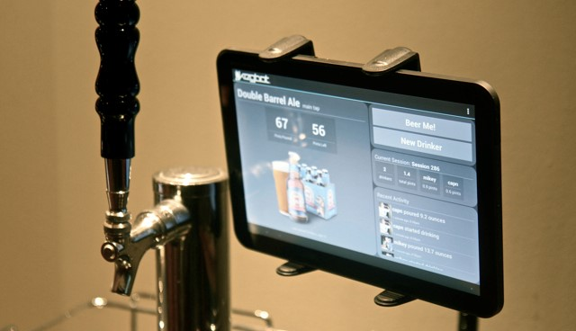
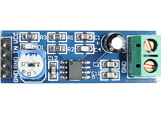
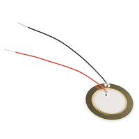
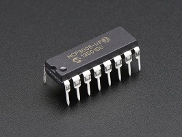
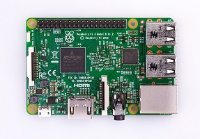
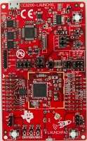
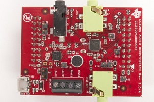
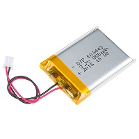
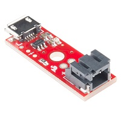

StreamFi is a liquid level sensor that is attached to the outside of any container holding liquid. StreamFi determines if the fill level is close to empty or full and notifies the sensor owner. The sensor and notifier will be self-contained and self-powered. Ideal applications of StreamFi are water containers at sports events or restaurants, kegs at stadiums or other large events such as music festivals, brake or wiper fluid in cars, and propane tanks. In addition to determining an empty condition, StreamFi could be used to check the full condition, for example the fill level of rain gauges or other reservoirs. Notification will be done through an application that allows the user to easily determine which sensor is nearing its critical condition. In addition, the sensor will notify the user when the sensor runs low on power. StreamFi could also reduce inventory costs for companies that store large quantities of liquid containers by allowing them to place orders only when exactly needed.
-
Monitoring Opaque Beverage Containers
It can be very difficult to determine how much liquid is remaining in an opaque beverage container. People often have to resort to tilting the container until no more liquid comes out, or lifting the container up to estimate its weight. With StreamFi, we hope to provide an effective means of monitoring liquid contents in a large beverage container so that people no longer have to guess when they need to refill the container.
-
Providing Real-Time Container Analytics
In addition to it being difficult to monitor how much liquid is in a container, it is also hard to find a reliable method that accurately measures how much liquid is in the container, with a low margin of error. StreamFi aims to solve this problem, as we hope to use a non-invasive technique that is applicable to many different containers, allowing mobility of our device as well as accurate measurements from the outside of a container by calculating resonant frequency responses that we get in real-time from sending an inaudible noise through the container to determine how much is in the container.
-
Providing Critical Liquid Level Notifications
Another key component of allowing people to effectively determine how much liquid is remaining in a large container involves actually notifying the individual when their container reaches a critically low level. We feel that StreamFi should also notify when their container is getting low (approximately around 10% remaining), so that they have time to refill the container.
Competitors
StreamFi has three major competitors in the market.
Even though each product is different, StreamFi's objective is similar to each of these products in different ways.
Read below and click the images to visit their websites!
-

Vessyl $199
-
H2OPal$99
-

KegBot$129/tap
StreamFi's major goals are to be a mobile solution that is non-intrusive to the liquid container. Additionally, we aim to measure liquid contents for a number of different liquids and provide the users real-time analytics on their containers and send notifications when their containers are running low on liquid. Vessyl, a smart cup product currently in production, is similar to our product because it is able to provide calorie information and other statistics about whatever liquid is in the container.
H2OPal is a smart water bottle that is able to help a user track their water consumption throughout the day. Its goals are similar to StreamFi in that its form factor is very similar to what we are creating. It is portable and able to move to other containers.
Additionally, KegBot is similar to our product in that it provides usage statistics for a number of users of a keg tap in a bar. Similar to KegBot, StreamFi will measure liquid consumption and provide the person monitoring the container how much liquid is remaining and provide real-time analytics on the container.
■ Notify the user on condition after determining liquid level
■ Mobile application or simple e-mail/SMS notification
■ StreamFi's lifetime data stored
■ Non-intrusive to container
■ Attached to the outside and quick calibration
■ Easily maintainable
■ Notification on damage or low power
■ Robust and durable
■ Liquid resistant, communication fault-tolerant, consistent data
■ Uniquely identifiable and specific to a user
■ Own multiple streams and view an aggregated dataset
At a high level, the system will make small vibrations in an object, and then read back these vibrations. As shown in other projects, an object will play these vibrations differently when it is touched or not touched; our team believes this principle can be applied to containers with fluids inside of them. The containers will play the vibrations differently when they are full, when they are empty, and when they are at different levels in between. Our system will make the vibrations, read them, send them to a signal processing unit to determine fill level of the container, and notify users when the container is almost empty. The components necessary to accomplish this task are shown below. See how they all fit together here.
-

Medium Surface Transducer
The transducer is be responsible for sweeping frequencies across the container. These vibrations are read by the piezoelectric sensor.
-

LM386 Audio Amplifier Module
While prototyping with the Raspberry pi, our team is using this audio amplifier to ensure that the transducer's sounds are loud enough to be read by the piezo sensor.
-

SEN-10293 Piezoelectric sensor
The vibration sensor is attached to the side of the container, to read back the sounds played by the transducer component.
-

MCP3008
To convert the analog voltage from the piezoelectric sensor, our team is using the Adafruit MCP3008 ADC. This ADC has a 10 bit resolution, and can sample at rates up to 200ksps.
-

Raspberry Pi 2
Our team is prototyping with a Raspberry Pi 2 as the central control unit for the mounted system. Using a ready-made Raspberry Pi is saving time and effort on a custom-made PCB, allowing our team to rapidly prototype and develop the computational and sensing components of the system.
-

CC3200 Launchpad
Our team plans to port over our design from the raspberry pi to this microcontroller. This microcontroller has a built-in wifi module, which will simplifiy communicating with the mobile application.
-

CC3200 Audio BoosterPack
When our team switches to the CC3200 Launchpad, we plan to use the CC3200 Audio BoosterPack to amplify the signal going to the transducer.
-

PRT-13854 Lithium Ion Battery
Our team plans to power the device with a portable battery. The battery must last for long periods of time, to minimize the inconvenience of recharging the subsystem. In particular, the device must be powered for at least a full day at a time. The battery should be rechargeable, which is why we opted for a lithium ion batter.
-

PRT-10217 Charging Circuit
Our team plans to use a PRT-10217 charging circuit to recharge the battery of the mounted component.
-
John Bird
John is a senior studying Electrical and Computer Engineering at Carnegie Mellon. He likes computer security and PCB design. If you can't find him working, check the closest hockey rink.
-
Evans Hauser
Evans is an Electrical and Computer Engineering student at Carnegie Mellon in the class of 2017. He enjoys programming, sports, and learning about anything new. Please teach him something if you ever meet him.
-
Selin Sirinterlikci
Selin is a senior at Carnegie Mellon studying Electrical and Computer Engineering. She likes programming and database integration. In her spare time, she is probably long-distance running or cheering on her favorite sports teams.
-
Nick Wilson
Nick is an undergraduate senior studying Electrical and Computer Engineering with a double major in Engineering and Public Policy. He likes web development, long-distance running, and tea.
This section contains documentation for our project throughout the semester. Please click each of the icons below to learn more about StreamFi!
-
Project Proposal
-
Pitch Presentation